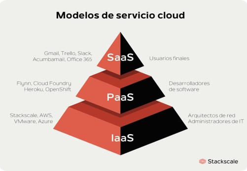

- La probabilidad asociada con cada agente de amenaza
- Vector de ataque
- Debilidad de seguridad
- Inyección SQL: Es un tipo de ciberataque encubierto en el cual un hacker inserta código propio en un sitio web con el fin de quebrantar las medidas de seguridad y acceder a datos protegidos. Una vez dentro, puede controlar la base de datos del sitio web y secuestrar la información de los usuarios.
- Secuencia de comandos en sitios cruzados (XSS): Son un ciberataque que se produce cuando un pirata informático inyecta código malicioso en un sitio web legítimo. En otras palabras, Los ataques de XSS son un tipo de ataque de inyección de código, una amplia categoría de ciberdelitos. Para realizar uno de estos ataques de inyección, un pirata informático añade (inyecta) su propio código en un programa vulnerable.
- Pérdida de autenticación y gestión de sesiones: Son críticas en la seguridad de las aplicaciones y en especial de las aplicaciones WEB, ya que permiten a un atacante suplantar la información de un determinado usuario, pudiendo llegar a obtener una cuenta de administración que le permita sabotear los controles de autorización y registro de la aplicación. La autenticación y establecimiento de sesión permite que un usuario se identifique como usuario de la aplicación y sea reconocido como tal por los mecanismos de control de acceso.
- Referencia directa insegura a objetos: Permiten a un atacante la posibilidad de obtener manipular referencias internas de la aplicación para acceder a objetos sin autorización. Es decir, la aplicación desarrollada que es vulnerable a este tipo de ataques permite el acceso a ficheros, directorios o registros de la base de datos a partir, entre otros, de un enlace a una URL o a un parámetro en un formulario.
- Falsificación de peticiones en sitios cruzados: Cuando los navegadores envían credenciales de autenticación automáticamente, como en el caso de las cookies de sesión, los atacantes pueden crear páginas web que generan peticiones falsas indistinguibles de las auténticas. Este tipo de ataques se centra no tanto en el robo de datos ya que el atacante no puede ver la respuesta a la petición manipulada sino en el cambio de estado de estos. Dependiendo del nivel de acceso de la víctima el atacante podría desde cambiar datos de la cuenta de la víctima hasta tomar control de la aplicación web pasando por transferir dinero, etc.
- Configuración de seguridad defectuosa: En un entorno de aplicación web los intentos de acceso pueden buscar su entrada mediante cuentas por defecto, versiones obsoletas con vulnerabilidades sin actualizar, directorios desprotegidos, etc. Por ello, tiene que estar todo bien configurado.
- Almacenamiento criptográfico inseguro: En muchas aplicaciones es necesario almacenar información con seguridad. Para ello, se recurre a bases de datos u otros soportes usando en muchos casos técnicas de cifrado. Pero se cometen errores al aplicar esas técnicas de cifrado.
- Fallo de restricción de acceso a URL: Frecuentemente, una aplicación solo protege funcionalidades delicadas previniendo la visualización de enlaces o URLs a usuarios no autorizados. Los atacantes utilizan esta debilidad para acceder y llevar a cabo operaciones no autorizadas accediendo a esas URLs directamente.
- Protección insuficiente en la capa de transporte: Un problema muy común en los sitios web es que usan HTTPS para la autentificación y luego continúan el resto de navegación mediante HTTP. En otros casos, aunque la web realiza toda la comunicación vía HTTPS, responde igualmente si las peticiones se le realizan mediante HTTP. Esto permite ataques Man in The Middle. Los ataques de intermediario son una amenaza común para los dispositivos móviles que buscan puntos de acceso Wi-Fi públicos.
- Redirecciones y reenvíos no validados: Las aplicaciones redirigen a los usuarios a otras páginas. Detectar redirecciones sin validar es fácil. Es necesario buscar redirecciones donde el usuario puede establecer la dirección URL completa. Sin una validación apropiada, los atacantes pueden redirigir a las víctimas hacia sitios de phishing o malware, o utilizar reenvíos para acceder páginas no autorizadas.
- Realiza revisiones automáticas con análisis de código estático detectando problemas que afectan la calidad del código.
- Es ampliable con el uso de complementos.
- Admite los lenguajes de programación más populares como Java, C / C ++, Objective-C, C #, PHP, Flex, Groovy, JavaScript, Python, PL / SQL, COBOL, etc.
- Facilita informes ofreciendo información objetiva de la calidad actual de los proyectos utilizando métricas y gráficos de prueba de calidad avanzados.
- Ayuda al equipo a mejorar en sus habilidades como programadores al facilitar un seguimiento de los problemas de calidad.
- Alerta de manera automática a los desarrolladores de los errores de código para corregirlos previamente a la implementación en producción.
- Favorece la productividad al reducir la complejidad del código acortando tiempos y costes adicionales al evitar cambiar el código constantemente.
- Código duplicado: La duplicación de código es generalmente considerada una señal de estilo de programación pobre o perezosa, ya que un buen desarrollo está más asociado a la reutilización de este.
- Código muerto: Es el código dentro de un programa de software que el programa no puede alcanzar o que realmente no utiliza. Puede estar presente por una amplia variedad de razones y, a medida que las personas trabajan con el software, identifican el código muerto y deciden qué hacer al respecto. En algunos casos, las personas pueden eliminarlo de manera segura sin comprometer el programa, y pueden hacerlo para que el programa sea más eficiente.
- Estándares de codificación: Conjunto de convenciones establecidas de ante mano (denominaciones, formatos, etc.) para la escritura de código. Estos estándares varían dependiendo del lenguaje de programación elegido y además varían en cobertura, algunos son más extensos que otros.
- Control de versiones: Es la práctica de rastrear y gestionar los cambios en el código de software. A medida que un desarrollador edita el código, el sistema de control de versiones toma una instantánea de los archivos. Después, guarda esa instantánea de forma permanente para que se pueda recuperar más adelante si es necesario.
- Entrega continua: Es un enfoque en el que los equipos producen software en ciclos de vida cortos, asegurando que el software se puede entregar en cualquier momento y, cuando se haga, hacerlo manualmente.
- Implementación continua: hace referencia al lanzamiento automático de los cambios que implementa el desarrollador desde el repositorio hasta la producción, para ponerlos a disposición de los clientes. Adoptar la implementación continua significa que puede hacer llegar las funcionalidades a los usuarios del modo más rápido posible sin poner en entredicho la calidad.
- Jenkins está siendo administrada por la comunidad, que es muy abierta. Todos los meses, celebran reuniones públicas y reciben aportes del público para el desarrollo del proyecto Jenkins.
- Jenkins también admite arquitectura basada en la nube para que pueda implementar Jenkins en plataformas basadas en la nube.
- La razón por la que Jenkins se hizo popular es que fue creado por un desarrollador para desarrolladores.
- Una de las razones por las cuales muchas personas no implementan Jenkins se debe a su dificultad para instalar y configurar Jenkins.
- Su interfaz está desactualizada y no es fácil de usar en comparación con las tendencias actuales de la interfaz de usuario.
- Aunque Jenkins es amado por muchos desarrolladores, no es tan fácil mantenerlo porque Jenkins se ejecuta en un servidor y requiere algunas habilidades como administrador del servidor para monitorear su actividad.
SCRUM
4 elementos del manifiesto ágil SCRUM:
Roles centrales: Su participación es indispensable para el proyecto, son los responsables por el éxito del proyecto, los cuales son:
Roles no controles: Su participación es importante pero no depende de ellos el fracaso o éxito del proyecto, pero a ellos hay que tenerlos en cuenta ya que su rol puede ser decisivo para el proyecto, estos son:
KANBAN
Empieza con lo que haces ahora: Puedes utilizar con los proyectos que tienes ahora.
Comprometerse a buscar cambios progresivos y evolutivos: Los grandes cambios pueden ser perjudiciales para el equipo, al tener varios cambios al mismo tiempo, puede generar que el sistema no funcione como se esperaba. Por esto está diseñado esta metodología que fomenta la mejora continua y el cambio progresivo.
Respetar los procesos, los roles y las responsabilidades actuales: A comparación de otras metodologías Lean, Kanban no posee roles integrados y puede funcionar con la estructura y los procesos actuales de tu equipo.
Impulsa el liderazgo en todos los niveles: Con Kanban no solo puede provenir de cualquier dirección y no solo "de arriba a abajo".
CMS
Semana 11
OWASP - SONARQUBE - JENKINS
OWASP (Open Web Application Security Project)
Es un proyecto sin ánimo de lucro a nivel mundial que busca mejorar la seguridad del software en general. Para esto, la organización se ha provisto de una serie de herramientas y documentos que explican cuáles son las brechas de seguridad más comunes en cualquier sistema de información. Sobra decir, que todos los materiales de OWASP están disponibles de manera libre (gratuita) para su libre consulta y uso.
El objetivo principal del proyecto OWASP Application Security Verification Standard (ASVS) es normalizar el rango de cobertura y nivel de rigor disponible en el mercado a la hora de realizar la verificación de seguridad de aplicaciones web utilizando un estándar abierto comercialmente viable.
Los atacantes pueden usar diferentes rutas a través de la aplicación de un negocio para causar importantes daños al mismo.
3 riesgos para una empresa:
Principales vulnerabilidades
Top 10 de las vulnerabilidades más importantes:
SONARQUBE.
Es una plataforma de código abierto para la inspección continua de la calidad del código a través de diferentes herramientas de análisis estático de código fuente. Proporciona métricas que ayudan a mejorar la calidad del código de un programa permitiendo a los equipos de desarrollo hacer seguimiento y detectar errores y vulnerabilidades de seguridad para mantener el código limpio. El análisis estático corresponde al proceso de evaluar un software sin ejecutarlo, debo mencionar que si pretendemos evaluar la cobertura de los test estos se deben ejecutar. Se distribuye bajo licencia GNU Lesser General Public License, en su versión Community, aunque también dispone de licencias superiores (principalmente para lenguajes más antiguos).
Su función principal es la de realizar análisis estático del código con el objetivo de detectar los errores lo antes posible.

4 características
3 beneficios de SonarQube
3 aspectos que en las SonarQube nos ayuda:
JENKINS
Es un servidor automatizado de integración continua de código abierto capaz de organizar una cadena de acciones que ayudan a lograr el proceso de integración continua (y mucho más) de manera automatizada. Al usar Jenkins, las compañías de software pueden acelerar su proceso de desarrollo del código; ya que Jenkins puede automatizar, agilizar y aumentar el ritmo de toda la compilación y las pruebas de los proyectos. Además, Jenkins puede ser implementado a lo largo de todo el ciclo de vida completo del desarrollo.
Con Jenkins, las organizaciones pueden acelerar el proceso de desarrollo de software a través de la automatización. Integra procesos de ciclo de vida de desarrollo de todo tipo, incluidos compilación, documentación, prueba, empaquetado, etapa, implementación, análisis estático entre otros.
3 funciones de Jenkins
3 ventajas de usar Jenkins
3 desventajas de usar Jenkins
Semana 12
TIPOS DE PLATAFORMAS
Tanto empresas, profesionales como usuarios utilizan cada vez más servicios en la nube (Cloud Computing). Este modelo basado en diferentes capas, maneja nueva terminología como IaaS, PaaS, SaaS, etc. que se prestan a ser confundidas unas con otras.
Gracias a estos servicios, las empresas están evitando realizar grandes inversiones tanto en software como en hardware. Además, obtienen múltiples ventajas de tener todas sus aplicaciones en la nube, permitiendo a sus empleados poder acceder a ellas desde cualquier dispositivo en cualquier lugar y a cualquier horario.
Que es IAAS
Infraestructura como servicio (IaaS) se refiere a los servicios en línea que proporcionan un alto-nivel de APIs utilizadas para indireccionar detalles a bajo nivel de infraestructura como recursos de informática física, ubicación, dato partitioning, scaling, seguridad, copia de seguridad etc.
Qué es PaaS:
El servicio PaaS ofrece plataformas como servicios. En estas plataformas se pueden lanzar aplicaciones como bases de datos, middleware, herramientas de desarrollo, servicios de inteligencia empresarial, etc.
Este tipo de servicios es el ideal para los desarrolladores que sólo quieran centrarse en la implementación y administración de sus aplicaciones. Al no tener que preocuparse por los recursos de hardware y software (sistemas operativo), mejoran su eficacia, centrándose sólo en la parte que les interesa.
Google App Engine:
este servicio de Google está enfocado a que el cliente pueda publicar aplicaciones web online, sin tener que preocuparse por la infraestructura donde hacerlo. Así, el cliente se enfoca solamente en la construcción y configuración de sus aplicaciones, siendo Google la encargada de aprovisionar de los recursos necesarios.
WordPress:
la instalación de WordPress en un servidor para diseñar una página web, da como resultado un sitio o página web que es accesible para los usuarios desde cualquier dispositivo, a través de internet. WordPress es un software que se está ejecutando en un servidor remoto donde el usuario interactúa con él sin tener nada que ver con la infraestructura necesaria para su funcionamiento.
Semana 13
SCRUM – KANBAN
La metodología SCRUM es un Framework adaptable, iterativo, rápido, flexible y eficaz que esta diseñado para entregar valor al cliente durante todo el desarrollo del proyecto. El objetivo primordial es satisfacer las necesidades del cliente a través de un entorno de transparencia en la comunicación, responsabilidad y progreso continuo.
Este Framework es muy ágil y completo en el desarrollo de proyectos. Scrum puede aplicarse a todo tipo de proyecto, pero no todos los proyectos requieren usar Scrum.
1. Individuos e interacciones sobre procesos y herramientas.
2. Software funcionando sobre documentación extensiva.
3. Colaboración con el cliente sobre negociación contractual.
4. Respuesta ante el cambio sobre seguir un plan.
Roles en SCRUM
Podemos encontrar dos categorías:
° Product ower.
° Scrum master.
° Equipo Scrum.
° Stakeholdres:
Clientes.
Usuario.
Patrocinador
° Vendedor.
° Scrum Guidance Body.
Kanban es uno de las formas para mantener un equilibrio entre el trabajo que se necesita y la disponibilidad de cada miembro del equipo.
La metodología de Kanban se basa por medio de tableros. Es un método de gestión de proyectos de manera visual que le permite a los equipos un flujo de trabajo y la carga de trabajo. Cada una de las columnas representa una etapa de trabajo, puede tener columnas como inicio, medio o fin del proyecto y también columnas de tareas dividías a cada miembro del equipo.
Los principios de Kanban:
Hay cuatro principios básicos que te ayudaran al implemento de la metodología Kanban:
Semana 14
CMS - ERP - RPA
Un C.M.S (Content Management System) o sistema de gestión de contenido, es un sistema online que permite poner en marcha una página web rápida y sencilla. Se trata de un Software que ayuda a administrar contenido dinámico, por ejemplo, un blog, una ecommerce o cualquier tipo de página web. Es especialmente para los que necesitan una actualización constante. Gracias a los C.M.S, muchos usuarios sin conocimiento en programación puede administrar una página web con una interfaz gráfica.
Anterior mente para crear desde cero una página web se necesita diferentes lenguajes de programación y subir contenido de manera manualmente al servicio, sin embargo, los C.M.S hacen que esta acción sea totalmente accesible.
Un C.M.S permite utilizar un editor de contenido para crear desde publicaciones y paginas hasta tiendas online y contenidos diversos. Lo que hace esencial un C.M.S es administrar todo el proceso de subida de contenido por el usuario, solo toca publicarlo y aparecerá automáticamente en la web.